00 60 秒速读版（先看这个）如果你只有一分钟，请记住这张“四段式”图景：
表 0 一分钟版全景
环节 发生了什么 用生活话说
① 备钱 葡萄糖 / 脂肪在线粒体里被逐步拆解，能量被存进 ATP（约 40% 存下，约 60% 变热）
把工资（饭）换成零钱（ATP），零钱罐很小，随用随取
② 付钱 ATP → ADP + Pi，放出约 8×10⁻²⁰ J
给分子马达投一枚硬币，只够买“一小步”
③ 干活 肌球蛋白头抓住细丝、旋转约 70°，拉动约 10 nm、出力约 4 pN
无数只手一起“划桨”，每只手只拉 1 厘米的十亿分之一
④ 见效 10¹⁷ 只手并联叠力、10⁵ 个肌节串联叠位移，再经肌腱和骨骼杠杆放大
汇总成几百牛的拉力、几十厘米的动作——杠铃离地
一句话： ATP 是零钱，马达是手，肌丝是绳，肌节是绳结，肌腱是缆，骨骼是杠杆，大脑是发令枪；
“举重”就是把 10¹⁷ 只手的 10 纳米小动作，汇总成 1 米的大动作。而全过程严格遵守：
吃进去的化学能 = 对外做的功 + 变成的热 （肌肉约 78% 变热，所以你会出汗）。
00⁺ 5 句话读懂全文
身体不用“燃料”直接干活，用的是“现钞”ATP。 糖和脂肪是存款，线粒体是取款机，ATP 是细胞里唯一能立刻花的零钱；而且零钱罐很小，必须边花边赚。1 个 ATP 水解只放出约 8×10⁻²⁰ 焦耳 ——小得离谱，大约只够把 1 个细菌抬高 8 微米。所以细胞不能“点篝火”，只能一笔一笔付小钱。把这些小钱变成动作的是分子马达（蛋白机器）。 肌球蛋白头抓一次、拉一下，位移约 10 纳米、力约 4 皮牛（4×10⁻¹² N），走完一次就消耗 1 个 ATP。宏观力量来自“数量”： 约 10¹⁷ 个马达并联（叠力）+ 10⁵ 个肌节串联（叠位移），再经肌腱和骨骼的杠杆放大，才有 200–400 N 的拉力和几十厘米的动作。微观与宏观能对上账： 吃进去的化学能 = 对外做的功 + 变成的热。肌肉做功效率约 22%，其余约 78% 变热——你举重时脸红、出汗，就是这个“损耗”的宏观表现。
一句话记忆法： ATP 是零钱，马达是手，肌丝是绳，肌节是绳结，肌腱是缆，骨骼是杠杆，大脑是发令枪；
“举重”就是把 10¹⁷ 只手的 10 纳米小动作，汇总成 1 米的大动作。
01 全局图：身体的能量流水线先建立地理概念。能量在你的身体里要经过四次“换乘”：
食物（化学能） → 消化吸收 → 细胞呼吸（线粒体） → ATP（通用现金） → 分子马达（力） → 宏观运动（举重、走路、心跳）
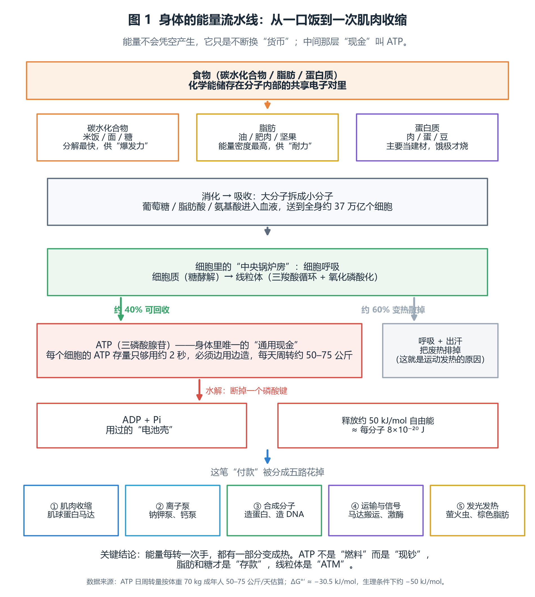
图 1 能量在体内换四次手。注意两处关键数字：细胞呼吸大约只有 40% 的能量被存进 ATP，其余约 60% 直接变成热；而每个细胞的 ATP 存量只够用约 2 秒，必须“边用边造”。
从 1 个 ATP 分子到举起 100 公斤：一条被放大 10²⁰ 倍的因果链
每一次分子级的“划桨”只有 10 纳米、4 皮牛的力；把 10¹⁷ 次这样的动作并联、串联起来，就是杠铃离地。
① 化学能：1 个 ATP
α
β
γ
+ 腺苷
ATP + H₂O → ADP + Pi
释放 ≈ 8×10⁻²⁰ J
≈ 4 pN × 10 nm，够一次划桨
（约一半变成热）
② 分子马达：肌球蛋白头“划桨”
肌动蛋白细丝（粗 7 nm）
粗肌丝
头部旋转约 70°，拖动细丝
每循环 1 个 ATP，走 10 nm，出力 4 pN
③ 肌节缩短
Z 线
Z 线
细丝滑向中央
2.2 µm → 1.6 µm
④ 宏观做功
对外做功 196 J
20 kg × 1 m
放大倍数一览（数量级估算，用于建立直觉）
马达数量
10¹⁷ 个肌球蛋白头
单步位移
10 nm = 10⁻⁸ m
串并联总位移
10⁵ × 10 nm = 1 mm（肌节层）
单马达力
4 pN = 4×10⁻¹² N
宏观结果：
1 块肱二头肌可产生 200–400 N 拉力，一次动作移动几十厘米——放大约 10¹² 倍（力）与 10⁷ 倍（位移）。
这就是全部秘密：不要指望 1 个马达举起杠铃
ATP 提供“一次性付款”（约 8×10⁻²⁰ J），肌球蛋白头把它换成 10 nm 的位移和 4 pN 的力；
10¹⁷ 个这样的“付款”按同一方向并行、串联地累加，再经肌腱与骨骼的杠杆放大，就成为你看到的举重。
能量守恒在这里完全成立：吃进去的化学能 = 对外做的功 + 变成的热（约 78% 变热，所以你会出汗）。
图 1-b 一张图看懂全链条：从 1 个 ATP 分子到举起 100 公斤，因果链被放大约 10²⁰ 倍。（图中文字随页面语言切换。）
1.1 三个必须分清的“能量名词”
表 1 三个层次的能量载体（这是全篇最容易混的地方）
层次 代表 在身体里的角色 规模感
存款 脂肪、糖原
存放几个月到几天的能量；不能直接驱动马达
70 kg 成年人脂肪 + 糖原可存约 10 万千卡以上
现金 ATP
唯一的“通用付款方式”，所有耗能反应都用它
全身 ATP 存量仅约 50–60 克，剧烈运动只够 2–3 秒
取款机 线粒体、糖酵解酶系
把存款换成现金；氧气是这套系统的“助燃剂”
每个细胞有几百到几千个线粒体
为什么要这么麻烦？ 因为细胞不能像发动机那样“一次烧掉一勺油”。一次放出太多能量会瞬间烧毁蛋白质和膜。
分成一个个 ATP 小包，既能精确控制位置（哪里需要就在哪里水解），又能精细调节速度（用力大就多水解几个）。
02 细胞怎么把饭变成 ATP2.1 第一站：消化与吸收（把大分子拆成小分子）
碳水化合物被拆成葡萄糖，脂肪被拆成脂肪酸和甘油，蛋白质被拆成氨基酸。它们进入血液，被送到全身约 37 万亿个细胞 。
2.2 第二站：细胞呼吸——三步把存款换成现金
糖酵解（在细胞质里，不需要氧）： 1 个葡萄糖 → 2 个丙酮酸 + 净得 2 个 ATP 。速度极快，是短跑、举重的先头部队。三羧酸循环（进入线粒体基质）： 把丙酮酸彻底拆开，释放出高能电子，交给“搬运工”NADH、FADH₂。氧化磷酸化（线粒体内膜）： 电子沿呼吸链传递，把质子泵到膜的一侧，形成“质子水坝”；质子回流时推动 ATP 合酶这台旋转马达，1 个葡萄糖总共可产出约 30–32 个 ATP 。
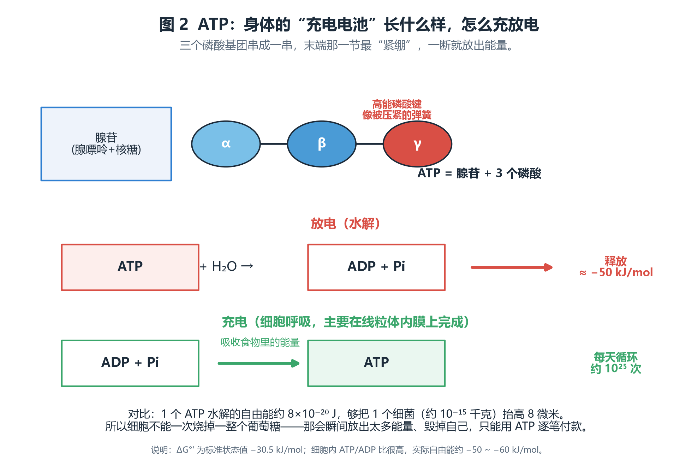
图 2 ATP 的“放电”和“充电”。ATP 由腺苷 + 3 个磷酸组成；水解掉末端那个磷酸（γ），就变成 ADP + Pi，同时放出约 50 kJ/mol 的自由能。注意：ATP 不是燃料，而是能量的“搬运工” ——它自己只负责把能量递到需要的地方。
算一算：1 个 ATP 到底有多少能量？ 8×10⁻²⁰ J / 个 ATP 。
2.3 身体的“日流水”：为什么 ATP 这么少却够用
表 2 ATP 的存量与流量（70 kg 成年人估算，量级示意）
项目 数量 换算 全身 ATP 总量 约 50–60 克 约 8×10²² 个分子，只够剧烈运动 2–3 秒 每天 ATP 周转量 约 50–75 公斤 约为体重的 1 倍，约 10²⁶ 个分子/天 周转倍数 约 1000 倍 每个 ATP 分子每天被“充放电”约 1000 次以上 剧烈运动的瞬时需求 约 10²² 个/秒 比静息时高约 100 倍——这就是“瓶颈”所在
因为“存款→现金”的转换速度有限，身体准备了三套不同功率的供能系统：
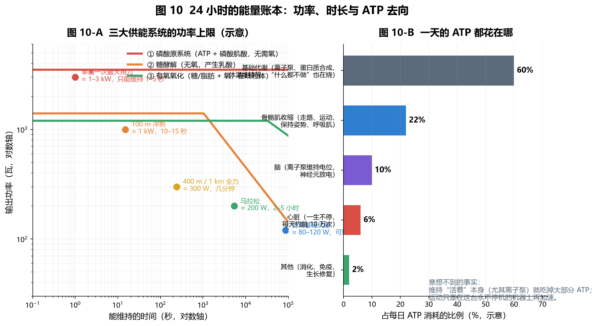
图 10 左：三大供能系统的“功率–续航”曲线（示意）。磷酸原系统（ATP + 磷酸肌酸）功率最高但只能撑几秒；糖酵解接力几十秒到两分钟；有氧氧化功率最低却几乎无限续航。
与举重的直接联系： 一次最大用力举重主要吃“磷酸原系统”的 3–5 秒配额；练力量时你会感觉“憋一口气只能来一下”，
这既是神经与力学问题，也是 ATP 现货补充速度问题。想连续做 10 次，中间必须留出 1–3 分钟让磷酸肌酸回充。
03 肌肉的六层套娃：从肌肉到肌丝要理解“小动作怎么变大力量”，先要看清楚肌肉是如何一层层打包的。
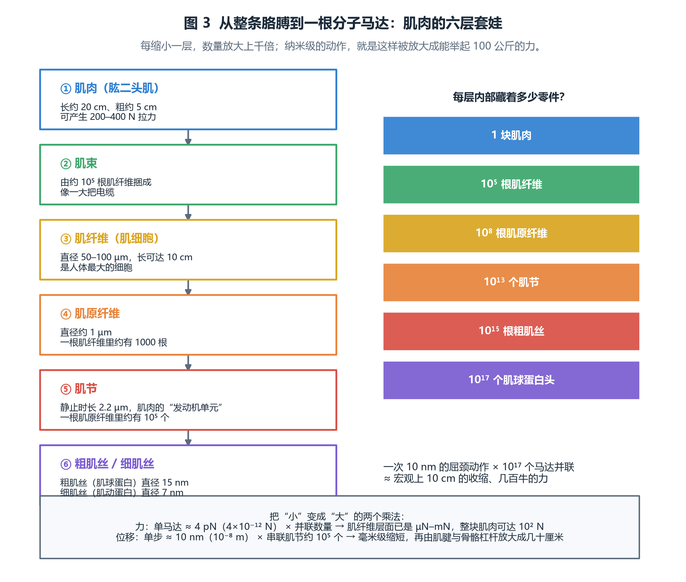
图 3 肌肉的六层套娃。每向下一层，尺寸缩小、数量放大：1 块肌肉 → 10⁵ 根肌纤维 → 10⁸ 根肌原纤维 → 10¹³ 个肌节 → 10¹⁷ 个肌球蛋白头。“放大”的秘密就在这些数量级里。
3.1 肌节：肌肉真正的“发动机单元”
肌节是两条 Z 线之间的一段，静止时长约 2.2 微米。里面主要是两种丝：
粗肌丝 （直径约 15 nm）：由肌球蛋白（myosin）组成，丝上伸出许多“头部”，就是分子马达。细肌丝 （直径约 7 nm）：由肌动蛋白（actin）双螺旋组成，是马达走的“轨道”；上面还缠着原肌球蛋白和肌钙蛋白，充当安全开关 。
肌节的解剖与两种状态：为什么“滑行”能让肌肉变短却不改变粗肌丝长度
一个肌节 = 两条 Z 线之间的一段；粗细肌丝本身长度不变，变的只是它们重叠的多少。
舒张（肌节长 2.2 µm，钙离子被泵回肌浆网）
Z 线
Z 线
肌球蛋白头（横桥）大多处于“未结合”状态
整个肌节 = 2.2 µm
A 带（粗肌丝长度）≈ 1.6 µm，永不改变
I 带（只有细丝）宽
I 带宽
H 区（只有粗肌丝）也较宽
神经信号 → 钙离子释放 → 横桥循环启动 → 细丝滑向中央
收缩（肌节短到 1.6 µm：细丝滑入更深，重叠区变长）
两根 Z 线被拉近 0.6 µm；A 带仍是 1.6 µm，I 带与 H 区明显变窄——这就是“滑行”的铁证。
图 4 肌节的解剖与两种状态。舒张时（上），细丝与粗肌丝重叠少，I 带和 H 区宽；收缩时（下），细丝向中央滑入更深，两根 Z 线被拉近，但 A 带（粗肌丝）长度始终不变 。这正是 1954 年 Huxley 滑行学说的关键证据：肌肉变短不是因为“丝被压缩”，而是因为“丝互相插进去”。（若上方图形未显示，见同目录下的 assets/extra_sarcomere.svg 文件。）
肌节的解剖与两种状态：为什么“滑行”能让肌肉变短却不改变粗肌丝长度
一个肌节 = 两条 Z 线之间的一段；粗细肌丝本身长度不变，变的只是它们重叠的多少。
舒张（肌节长 2.2 µm，钙离子被泵回肌浆网）
Z 线
Z 线
肌球蛋白头（横桥）大多处于“未结合”状态
整个肌节 = 2.2 µm
A 带（粗肌丝长度）≈ 1.6 µm，永不改变
I 带（只有细丝）宽
I 带宽
H 区（只有粗肌丝）也较宽
神经信号 → 钙离子释放 → 横桥循环启动 → 细丝滑向中央
收缩（肌节短到 1.6 µm：细丝滑入更深，重叠区变长）
两根 Z 线被拉近 0.6 µm；A 带仍是 1.6 µm，I 带与 H 区明显变窄——这就是“滑行”的铁证。
图 4-b 肌节的解剖与两种状态（矢量示意图）。舒张时细丝与粗肌丝重叠少，I 带和 H 区宽；收缩时细丝滑入更深，两根 Z 线被拉近，而 A 带长度始终不变。（图中文字随页面语言切换。）
钙离子是总开关，ATP 是总闸门。
神经信号到达 → 肌浆网释放 Ca²⁺ → 肌钙蛋白变形 → 原肌球蛋白挪开 → 肌动蛋白露出结合位点 → 马达可以抓丝（此时才开始收缩 ）。
神经信号停止 → 钙泵（SERCA）把 Ca²⁺ 泵回肌浆网（这一步也消耗 ATP ）→ 开关复位 → 肌肉舒张。
如果 ATP 完全耗尽，马达无法“松手”，肌肉会一直僵住——这就是死亡后的“尸僵”。ATP 在这里的作用居然是“松手” ，非常反直觉。
04 分子马达：细胞的“搬运工”与“划桨手”分子马达是一类蛋白质机器：它们能把 ATP 水解的化学能直接转换成定向的机械运动 ，不需要齿轮、曲轴或活塞。人体里有三大类最出名：
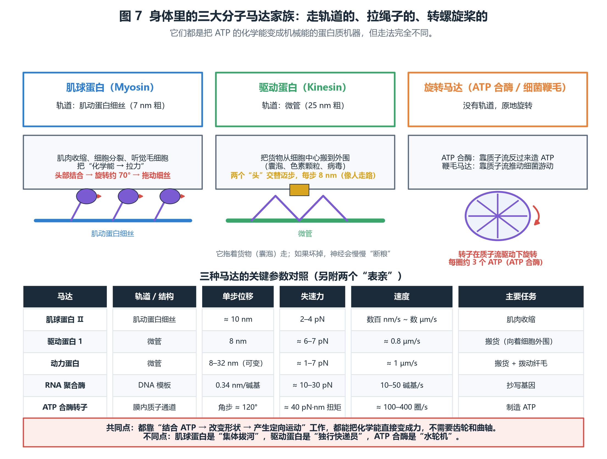
图 7 三大分子马达家族与关键参数对照。肌球蛋白 Ⅱ 走肌动蛋白丝、负责肌肉收缩；驱动蛋白和动力蛋白走微管、负责细胞内运输；ATP 合酶与细菌鞭毛马达则是“旋转式”，靠质子流驱动。它们的工作语言都是 ATP。
4.1 三种“走路姿势”
肌球蛋白 Ⅱ（拉绳式）： 两个头交替抓住肌动蛋白丝并旋转“划桨”，一次约 10 nm；它是集体作业，成千上万个头同时拉，形成持续的力。驱动蛋白（手递手走路式）： 两个头交替迈步，每步 8 nm，像人走路一样沿着微管前进，身后拖着一个囊泡货物。它是“独行快递员”，负责把物质从细胞中心运到外围。旋转马达（水轮式）： ATP 合酶让质子流冲过膜内的通道，带动转子旋转，每转约 120° 装上一个磷酸，转 3 步造出 3 个 ATP；细菌鞭毛马达则用同样的原理把自己变成螺旋桨。
数字直觉：这些马达有多“微观”？
力：1 个肌球蛋白头约 4 pN = 4×10⁻¹² N 。作为对比，一根头发丝的重量约 10⁻⁷ N，也就是说头发自重是它的 2.5 万倍 。
步长：约 10 nm = 10⁻⁸ m ，大约是一根头发的十万分之一粗，等于 3–4 个肌动蛋白单体的间距（每个单体约 2.7 nm）。
速度：无负荷时每秒可走 10–20 步，即 0.1–0.2 µm/s 到几个 µm/s，比树懒还慢；但数量极多，所以宏观上并不慢。
反直觉但关键：ATP 的作用首先是“让马达松手”。
肌球蛋白头一旦抓住肌动蛋白（强直状态），必须结合一个新的 ATP 才能脱离 。
所以：ATP 多 → 松手快 → 循环快 → 收缩快而灵活；ATP 耗尽 → 全部僵住 → 尸僵。
05 横桥循环：一次划桨的完整账本把镜头推到单个肌球蛋白头上，它的“工作日”是这样的五步循环：
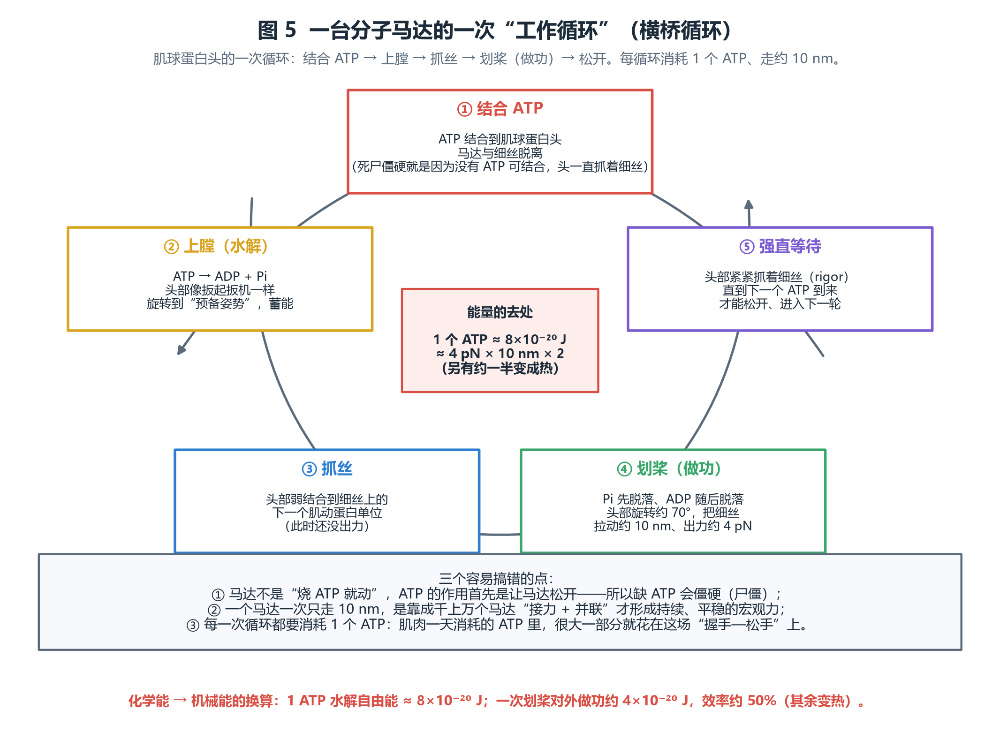
图 5 横桥循环五个步骤。① 结合 ATP （脱离细丝）→ ② 水解上膛 （ATP → ADP + Pi，头部像扳起扳机一样旋转蓄能）→ ③ 弱结合抓丝 → ④ 划桨做功 （Pi、ADP 依次脱落，头部旋转约 70°，拉动细丝约 10 nm、出力约 4 pN）→ ⑤ 强直等待 ，直到下一个 ATP 到来才能松手重新开始。每循环消耗 1 个 ATP。
5.1 能量账本（单次循环）
表 3 一次横桥循环的能量收支（数量级估算）
项目 数值 说明 投入：ATP 水解自由能 ≈ 8×10⁻²⁰ J 生理条件下 ΔG ≈ −50 kJ/mol 产出：对外机械功 F × d = 4 pN × 10 nm ≈ 4×10⁻²⁰ J 假设全程满载出力 产出：变成热的部分 ≈ 4×10⁻²⁰ J 单分子层面效率约 50%（受负载影响） 整块肌肉的效率 约 22%（做功效率） 因为还要养钙泵、钠钾泵，并克服组织黏弹性
注意两个不同的“效率”不要混淆： 单个马达的转换效率 （化学能 → 机械功）在合适负载下可达 30–50%；整块肌肉做功效率 （对外做的功 ÷ 总代谢能）通常只有 20–25%，因为还包括钙泵、钠钾泵、基础代谢等开销。
5.2 力与速度的取舍：为什么举重要慢
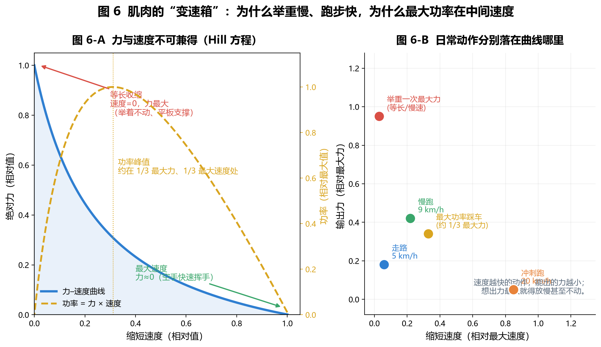
图 6 肌肉的“变速箱”。A：Hill 方程描述的力–速度关系——缩短速度越快，能出的力越小；两者相乘得到的功率在中间速度（约 1/3 最大力、1/3 最大速度）达到峰值。B：日常动作各自落在曲线的不同位置：举重落在“高力低速”端，冲刺跑落在“高速低力”端，最大功率输出（如全力踩车）在中间。
这条曲线解释了三个日常现象：
举重必须放慢：想要最大力，就必须接近等长收缩（速度≈0）。
平板支撑、举着不动很累：对外做功为 0，但马达仍在循环、钙泵仍在抽钙、钠钾泵仍在补电位，ATP 照烧。
“最大功率”的动作（如全力骑车、壶铃摆荡）不会用极限重量，而是用中等重量快速移动——这正好落在曲线中部。
06 从小动作到大力量：放大的两个乘法这是全篇最核心的一节：纳米级的分子动作如何变成几百牛的宏观力？ 答案是两个“乘法”：
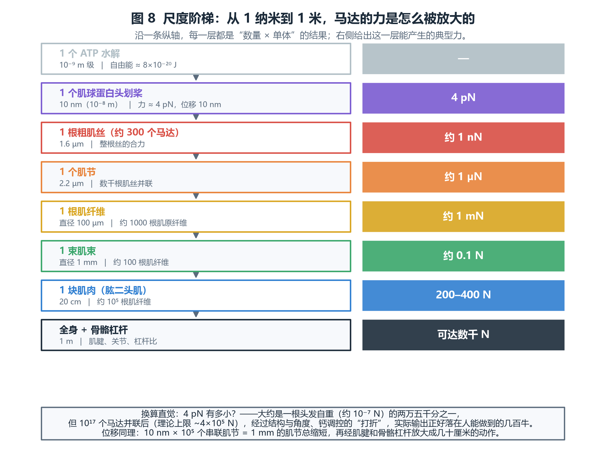
图 8 尺度阶梯。每一层都是“上一层的小量 × 巨大的数量”。单马达 4 pN，整块肱二头肌可达 200–400 N；单步 10 nm，整条肌肉的肌节串联后缩短毫米级，再经杠杆放大成几十厘米。
6.1 乘法一：并联叠力（把力加起来）
同一时刻，成千上万个马达朝着同一方向拉，它们的力是并联叠加 的：
1 个肌球蛋白头：约 4 pN。
1 根粗肌丝：约 300 个头部，其中一部分处于结合状态 → 合计约 0.1–1 nN 。
1 根肌纤维（约 10⁵ 根肌原纤维、几百万根粗肌丝并联）→ 约 1 mN 量级。
1 块肱二头肌（约 10⁵ 根肌纤维并联）→ 200–400 N 。
从 4 pN 到 300 N，放大了约 10¹⁴ 倍 。
为什么不是简单地把 10¹⁷ × 4 pN 全加起来？ 因为真实的肌肉有三个“折扣”：
① 不是所有头部在同一瞬间都结合着（每次只有一部分在拉，占空比很低，快肌约 5% 量级）；
② 头的方向和肌丝的夹角会损失一部分分力；
③ 钙调控、疲劳与代谢限制。
所以实际肌肉的最大张力约 300 kN/m²（约 3 kg/cm²） ，这个数字与“每个头 4 pN、头部密度约 10⁹ 个/mm²、占空比约 5%”完全自洽——微观参数与宏观测量在这里对上了账。
6.2 乘法二：串联叠位移（把行程加起来）
肌肉变短的总量，是所有串联肌节的缩短量之和 ：
1 个肌节：从 2.2 µm 缩到 1.6 µm，缩短约 0.6 µm （每个头贡献其中 10 nm 级的一小步，靠反复循环累积）。
1 根 10 cm 长的肌纤维：约 10⁵ 个肌节串联 → 总缩短可达 数厘米 。
再加上肌腱的弹性储能与骨骼杠杆（关节力臂），最终表现为手移动几十厘米、杠铃上升 1 米。
两个乘法的“订单量”： 一次把 20 kg 举高 1 m，需要约 10²² 个 ATP 分子被水解（见第 7 节的计算）。
如果想象成“马达订单”，那大约是 10²² 次划桨——而你只花掉约半千卡的能量，相当于一粒花生米。
07 举重全过程：从想吃东西到杠铃离地
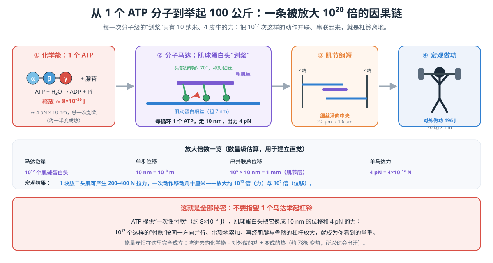
图 9 全链条总览：ATP 水解 → 肌球蛋白头旋转 → 细丝滑行 → 肌节缩短 → 肌纤维缩短 → 肌肉产生拉力 → 肌腱拉动骨骼形成杠杆 → 杠铃离地。每一步都只是“上一层的小动作 × 巨大的数量”。（若未显示，见 assets/hero_chain.svg。）
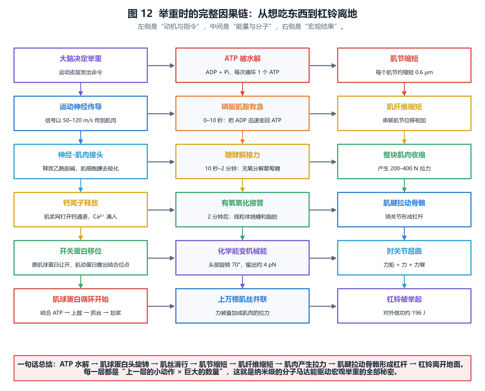
图 12 把这条链条拆成三列看得更清楚：左列是“动机与指令”（大脑 → 神经 → 钙离子 → 开关蛋白），中列是“能量与分子”（ATP 与三大供能系统 → 马达划桨 → 力叠加），右列是“宏观结果”（肌节缩短 → 肌肉收缩 → 骨骼杠杆 → 杠铃离地）。
7.1 一次举重的能量账本（20 kg，举高 1 m）
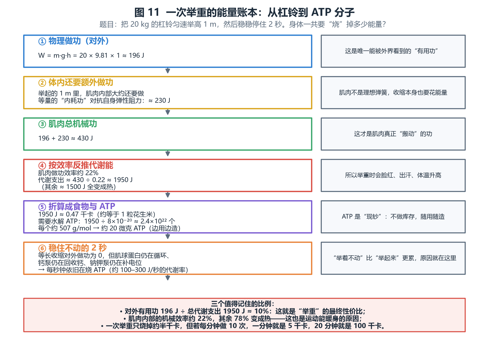
图 11 六步算出“举一次到底花了多少能量”。结论：对外有用功 196 J，肌肉内部还要做约 230 J 的额外功，
按 22% 效率反推，总代谢支出约 1950 J ≈ 0.47 千卡 ，需要水解约 2.4×10²² 个 ATP （约 20 微克，边用边造）。
表 4 举重能量账本（完整版，便于核对每一步）
步骤 公式 / 数值 含义 ① 对外有用功 W = mgh = 20 × 9.81 × 1 ≈ 196 J 外界能“看到”的唯一功 ② 体内附加功（内耗） ≈ 230 J （量级估算） 对抗肌肉自身弹性、黏性阻力；随动作与个体差异较大 ③ 肌肉总机械功 196 + 230 ≈ 430 J 肌肉实际“搬动”的功 ④ 代谢支出 430 ÷ 0.22 ≈ 1950 J 按肌肉做功效率约 22% 反推；其余约 1500 J 变热 ⑤ 折算食物能量 1950 ÷ 4184 ≈ 0.47 千卡 约等于 1 粒花生米 ⑥ 折算 ATP 分子数 1950 ÷ 8×10⁻²⁰ ≈ 2.4×10²² 个 约 20 微克 ATP，边水解边再合成 ⑦ 稳住不动的 2 秒 对外做功 0 ，但代谢率仍在 100–300 J/s 量级 马达空循环、钙泵抽钙、钠钾泵补电位——“举着不动”更累
常见疑惑：既然 ATP 只有 50 多克，怎么可能举一次就水解 2.4×10²² 个（约 20 微克）？ 流水 不是库存 ：磷酸肌酸与线粒体在几秒内不断把 ADP 重新充成 ATP，
就像一家店一天卖出几百杯咖啡，但店里同时只摆着十杯。
7.2 时间顺序：身体是怎么“零延迟”供能的
0–3 秒： 直接水解现成 ATP（存量极小，几乎瞬间用完）。3–10 秒： 磷酸肌酸把 ADP 迅速变回 ATP（“应急充电宝”），功率最高。10 秒–2 分钟： 糖酵解接棒（无氧，产生乳酸，功率下降但仍可维持高强度）。2 分钟后： 有氧氧化成为主力（线粒体烧糖和脂肪），功率最低但几乎无限续航，并负责把前面欠的“氧债”还清。
08 与宏观世界的对应：功、功率、效率、热这一节把细胞层面的数字与物理课本上的量一一对上。
8.1 概念对照表
表 5 微观 ↔ 宏观对应关系
宏观概念 公式 / 单位 细胞层面的对应物 功（Work） W = F·d，单位焦耳 J 肌球蛋白头出力 × 位移；大量马达做功之和 力（Force） F，单位牛顿 N（1 N = 10¹² pN） 单个马达约 4 pN，靠并联叠加成 N 级 位移（Displacement） d，单位米 m（1 m = 10⁹ nm） 单步 10 nm，靠串联肌节叠加成 m 级 功率（Power） P = W/t，单位瓦 W ATP 水解速率 × 每个 ATP 的功；瞬时可达 1–3 kW 能量（Energy） E，单位 J；食物常用千卡 kcal（1 kcal = 4184 J） ATP 水解自由能 ≈ 8×10⁻²⁰ J/个 效率（Efficiency） η = 有用输出 ÷ 总输入 单马达约 30–50%，整块肌肉约 22% 热（Heat） Q，单位 J 未被利用的自由能；肌肉约 78% 的代谢能变热 熵 / 第二定律 ΔS总 ≥ 0 为什么效率永远不可能 100%：一部分自由能必然以热的形式耗散
8.2 效率对比：身体其实“不高效”，但很耐用
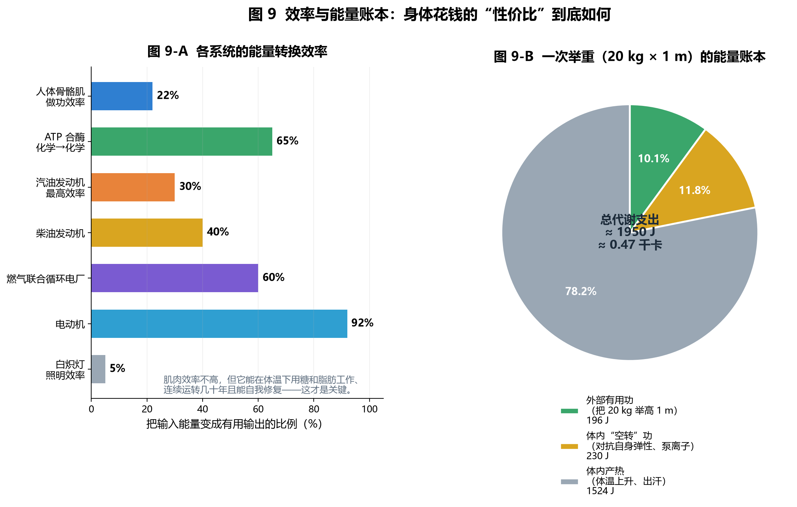
图 9-b 左：各类系统的能量转换效率。人体骨骼肌约 22%，低于柴油机（约 40%）和电动机（约 90%），但它能在体温下、用糖和脂肪、连续工作几十年并自我修复——这才是生物系统的真正优势。右：一次举重的能量去向：对外有用功仅约 10%，其余大部分变成热。
为什么你必须出汗？ 因为约 78% 的代谢能变成热。静息时人体产热约 80–120 W（相当于一只白炽灯泡），
剧烈运动时可升到 1000 W 以上。散热跟不上，体温就会上升——出汗和皮肤血管扩张，就是身体给这台“低效率发动机”配的冷却系统。
8.3 能量守恒怎么对上账
以一次 20 kg、1 m 的举重为例，输入与输出的完整对账：
表 6 能量守恒对账（以 1950 J 代谢支出为 100%）
项目 能量 占比 去哪了 对外有用功（举起杠铃） 196 J ≈ 10% 重力势能，松手后可转化为别的能量 体内机械“空转”功 ≈ 230 J ≈ 12% 最终也变成热 代谢产热与内耗热 ≈ 1520 J ≈ 78% 体温、汗液蒸发、血流 合计 ≈ 1950 J 100% 不多不少，正好守恒
三个“必须记住的等号”：
09 常见误解与自测题9.1 六个常见误解
误解 1：“肌肉收缩就是把肌纤维像弹簧一样压短。”
不对。粗细肌丝本身长度几乎不变，变的是它们重叠的多少 。证据：收缩时 A 带（粗肌丝区）长度不变，I 带和 H 区变窄（见图 4）。
误解 2：“ATP 是燃料，烧掉就没了。”
ATP 更像“充电电池/现金”：水解成 ADP + Pi 后，会被磷酸肌酸、糖酵解和有氧氧化迅速再充回 ATP。你每天周转的 ATP 约等于自己的体重。
误解 3：“举着不动就不做功，所以不耗能量。”
物理上对外不做功，但生理上仍在烧 ATP：马达空循环、钙泵持续抽钙、钠钾泵维持膜电位。这就是平板支撑和静力训练同样累人的原因。
误解 4：“肌肉收缩是靠马达‘推’细丝，或者靠某种胶水黏住。”
是靠马达“抓—拉—松”的循环：结合 ATP 使头部脱离，水解后头部“上膛”，再抓住细丝划桨约 70°。胶水（持续结合）恰恰是病理状态——尸僵。
误解 5：“单个马达很强，所以肌肉有力。”
恰恰相反：单个马达只有 4 pN（头发的两万五千分之一重）。肌肉的力量完全来自数量 ：并联叠力、串联叠位移。
误解 6：“人体效率低，所以很浪费。”
效率低是热力学的必然（第二定律）。生物系统的真正优势是可自我修复、可在常温常压工作、可用糖和脂肪作燃料、可连续运行几十年。工程系统“效率高”但需要机油、冷却和维修。
9.2 自测题（先想再看答案）
题 1 1 个 ATP 水解约放出 8×10⁻²⁰ J；一个肌球蛋白头一次划桨出力 4 pN、位移 10 nm。这次划桨的机械效率大约是多少？
对外功 = 4×10⁻¹² N × 10×10⁻⁹ m = 4×10⁻²⁰ J。效率 = 4×10⁻²⁰ ÷ 8×10⁻²⁰ = 50% （这是理想满载情况；实际负载不同会变化，整块肌肉因还有钙泵等开销，效率降到 20–25%）。
题 2 全身 ATP 只有约 50 克，为什么剧烈运动能持续几秒到几十秒？
因为 ATP 是“流水”不是“库存”。磷酸肌酸可以在几秒内把 ADP 迅速再磷酸化，糖酵解随后接力。ATP 周转量每天约 50–75 公斤，说明它被反复充放电上千次。
题 3 把 10 kg 的箱子举高 0.5 m，对外做功多少？如果肌肉效率 22%，大约要消耗多少代谢能？折合多少千卡？
W = 10 × 9.81 × 0.5 ≈ 49 J ；代谢能 ≈ 49 ÷ 0.22 ≈ 223 J ；折合 223 ÷ 4184 ≈ 0.053 千卡 （若算上体内附加功，实际会更高）。
题 4 为什么举重时“憋住不动”比“快速举起”更容易发抖并很快力竭？
等长收缩对外不做功，但马达仍在循环、钙泵和钠钾泵仍在耗 ATP，同时肌肉内压升高压迫血管导致供氧变差。也就是“收入没增加、支出照旧”，因此更快疲劳。
题 5 如果全部肌肉的肌球蛋白头在同一瞬间都结合并出力，会产生多大力量？为什么实际做不到？
粗算是 10¹⁷ × 4 pN ≈ 4×10⁵ N（几十吨的力）。实际做不到的原因：头部占空比很低（多数时间在“上膛/等待”）、方向分力损失、钙调控与代谢供能限制，因此实际最大张力约 300 kN/m²，整块肱二头肌约 200–400 N。
10 附录：数据速查表与资料来源10.1 关键数据速查
表 7 常用数值（量级估算，用于建立直觉；不同来源与个体会有差异）
项目 数值 ATP 水解自由能（生理条件） 约 −50 kJ/mol ≈ 8×10⁻²⁰ J/分子 全身 ATP 存量 / 日周转量 约 50–60 克 / 约 50–75 公斤 人体细胞数 约 3.7×10¹³（37 万亿） 肌节静止长度 / 最短长度 约 2.2 µm / 约 1.6 µm 粗肌丝 / 细肌丝 / 微管直径 约 15 nm / 7 nm / 25 nm 肌球蛋白头单步 / 失速力 约 10 nm / 约 4 pN 驱动蛋白单步 / 失速力 / 速度 8 nm / 约 6–7 pN / 约 0.8 µm/s 肌肉最大张力 约 300 kN/m²（约 3 kg/cm²） 肱二头肌典型拉力 约 200–400 N 肌肉做功效率 约 20–25% 静息代谢功率 约 80–120 W（≈ 2000 千卡/天） 瞬时最大输出功率 约 1–3 kW（仅数秒） 1 千卡 = 4184 J
10.2 一句话总复习
食物是存款，ATP 是现金，线粒体是 ATM；分子马达是手，肌丝是绳，肌节是绳结；
10.3 主要资料来源与延伸阅读
Huxley, A. F. & Niedergerke, R. (1954) Structural changes in muscle during contraction ；Huxley, H. E. & Hanson, J. (1954) —— 滑行学说的原始论文。
Hill, A. V. (1938) The heat of shortening and the dynamic constants of muscle —— 力–速度关系的经典来源。
Finer, J. T., Simmons, R. M. & Spudich, J. A. (1994) Single myosin molecule mechanics: piconewton forces and nanometre steps , Nature —— 单分子力与步长的直接测量。
Kinosita, K. 等关于 F₁-ATP 合酶旋转与扭力的系列工作（Nature / Cell，1997–2000）。
Block, S. M.、Svoboda, K.、Vale, R. D. 等关于驱动蛋白步进与失速力的单分子研究。
Nelson, P. C. 等关于骨骼肌肌球蛋白头部密度与占空比的定量研究（用于“4 pN → 300 kN/m²”的自洽性核对）。
生理学与生物化学教材：Guyton & Hall Textbook of Medical Physiology 、Lehninger Principles of Biochemistry 、Alberts, Molecular Biology of the Cell 。
说明：文中所有“×10⁻²⁰ J”“4 pN”“10 nm”“22%”等数值都是量级估算，用于建立直觉与自洽核对，不作为精密测量值。
本文档为离线单文件网页，所有插图位于同目录的 assets/ 文件夹内（PNG 为数据图，SVG 为结构示意图）。用浏览器打开即可阅读；也可用浏览器“打印 → 另存为 PDF”生成电子书版本。